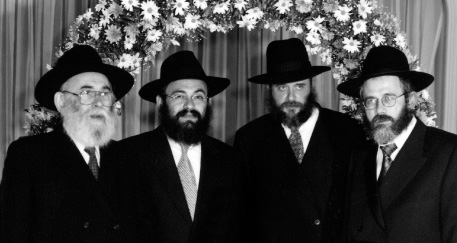

Sudden Suggestion
The one time the Rebbe called me “Heishe.” * The remarkable kiruv and the open miracle of the Rebbe when we had children.

During the years when I worked on the Rebbe’s sichos (for the weekly Likkutei Sichos booklets), I often wondered how it happened that I became involved in such holy work. I had to conclude that it happened in the merit of my exalted parents or in the merit of my wife, my life partner. Chazal say that a person’s parnasa is in the merit of his wife and perhaps spiritual parnasa is included in this as well.
The natural course of events through which I got involved was that my dear friend, R’ Tzvi Hirsh Gansbourg, pulled me in. It was definitely one of the loftiest opportunities that ever came my way, but I am a very puny maven in lofty things like these. In retrospect, it turns out that because of my work on the Sichos Kodesh, I did something extremely foolish, something that a real Chassid would never do. This is what happened:
I used to work at the Shulzinger printing house at night and on certain days I worked on the sichos. One time, in the middle of the night, I received a phone call from none other than Rabbi Chadakov. He told me that he had just left the Rebbe’s yechidus room and “there is an offer for you – to be a regular employee at the mazkirus,” for half a week.
This would entail me working at the printing house four nights for nine hours each night, instead of five nights for seven hours a night. That is how R’ Chadakov thought I would be able to spare half a week to work for the Rebbe.
I was taken aback and could hardly believe that this idea came from the Rebbe, but if so, what could be better? Assuming that was the case, I told R’ Chadakov that since I worked on the sichos every week, this work should be included in the “half-position” work for the mazkirus. When R’ Chadakov said that this was out of the question, I was left with nothing to say. I began thinking: From where would I take the hours for the mazkirus?
It was clear that I had to remain at the printing house. Likewise, I could not consider stopping work on the Likkutei Sichos. The members of the Vaad L’Hafatzas Sichos would not take it quietly; it would come back to me in the sharpest manner (although I did not know why I was so necessary). I was afraid.
TESTIMONY FROM ABOVE
So I did not give an immediate answer and that wasn’t good. It was very not good when I told my wife the next day. She “gave it” to me. First, she thought the suggestion came from the Rebbe; and even if this was uncertain, I should have answered in the affirmative without thinking about it. And she was right!
And the Rebbe had been so good to me! Listen to what happened in those days, over forty years ago:
One of the distinguished Chassidim had written a book of memoirs and Chassidishe stories that he heard from his grandfather, a big Lubavitcher Chassid from a few generations back. He submitted the stories to the Rebbe and when the Chassid went to the Rebbe, the Rebbe told him to print his stories and even gave him money for this – $3000, a large sum in those days.
This Chassid met me a few days later in 770, and with a smile and a wagging finger he said that now he knew I was a big dreier (Yid. lit. one who turns or spins, used colloquially in various contexts, in this case a “big shot”). I looked at him in astonishment. Who, me? Who spin? What spin?
He said: Don’t tell me stories! I know from a reliable source that you are a dreier, a big dreier.
Now I became concerned. I asked him: Can you tell me your source?
“I can’t tell you,” he said.
Another few days went by and I met him again. This time, he stopped me with his hand upraised.
“Listen, Yehoshua, I will tell you how I know you are a big dreier. I was at the Rebbe with my manuscript and the Rebbe told me to publish it as soon as possible. The Rebbe even gave me money to print it, but the Rebbe said it could not be printed as it was written. It had to be edited.”
The Chassid said that he thought for a moment and then told the Rebbe he has a friend who would do it.
“Who?” asked the Rebbe.
“My friend Dubrawski.”
The Rebbe responded, “You don’t have to ask Dubrawski. He is needed only if it is necessary to change something big. For you, it would be sufficient to ask … who knows the language and can fix it.”
That is how I became a “groiser dreier” to this Chassid.
There was another incident in which the Rebbe freed me from editing a work by a different author, a project that was very problematic for me, but I won’t get into that now.
AN INHERITANCE OF A SHLICHUS
Hashem gave me the privilege of having all my children on shlichus. Most of my married grandchildren, too, are on shlichus. I was not a shliach, so where did this desire, this urge to be shluchim, come from? They will laugh behind my back if I even suggest that it is at all on my account.
As I mentioned previously, my wife grew up in a home that was constantly busy with “u’faratzta” and “shlichus.” In the Chabad version of Soviet Russia, which demanded a high level of Chassidus and mesirus nefesh, this meant to give some of your supper to a yeshiva bachur, to give a blanket to a boy who did not feel well, to stand on line for hours to get bread – all this and many other similar deeds were woven into the chinuch that my wife, her brother and sisters received in their home in Kutais, Georgia (where Yeshivas Tomchei T’mimim was hosted in the bitter 30’s).
I should mention that my father-in-law began taking care of kosher mezuzos, kosher tzitzis, and so on, many years before these things became the foundation of Chabad life under the Rebbe’s leadership. It was like an inner urge of his neshama to be a shliach of the Rebbe, Nasi Doreinu.
And perhaps I should mention that the births of all those shluchim are thanks to a miracle – a bracha from the Rebbe. The following is our story (and Heaven is my witness that this is not at all like the “first-hand” stories of certain over-imaginative authors…):
FIRST YECHIDUS
Over a year had passed since our wedding and there were still no children on the way. My wife saw a top doctor in Paris and he stated that her chances of conceiving were slim.
In 5713/1953, a few years after our marriage, we arrived in Brooklyn. New York was flooded with refugees and the Joint Distribution Committee wanted us to settle in Detroit (where there was a large Jewish community). It was then that we had our first yechidus with the Rebbe.
I will add parenthetically that Zeide-Rav, Rabbi Menachem Mendel Dubrawski z”l, lived with us at that time and had yechidus with us. He was a broken man by that point, but when the Rebbe stood up for him and asked him to sit down, he refused. After saying the SheHechiyanu blessing and the Rebbe’s blessings, Zeide said he was a cousin of the Rebbe’s father, and so on. The Rebbe responded with his charming smile and said, “We know, we know.”
I told the Rebbe that we had been waiting a long time for children and about the Parisian doctor’s negative diagnosis. The Rebbe dismissed what the doctor said and said the following unforgettable words, “Over here it is otherwise.”
The Rebbe continued, “But since you need to operate within the parameters of nature, your wife should go to a local doctor.” Then the Rebbe blessed us.
GOOD NEWS
My wife was examined by an American doctor, but he did not have anything positive to say. We went to Detroit and months went by without our seeing the fulfillment of the brachos. I wrote to the Rebbe and detailed our requests. The Rebbe’s answer was that we would see salvation and he showered us with brachos.
More time passed with no change. I wrote to the Rebbe again. Till this day, I don’t know where I got the nerve or the chutzpa to ask not only for a bracha but for a promise too.
I did not receive an answer to this letter; but my wife gave me the good news. When I informed the Rebbe of the news, he told me not to publicize it until three months had gone by. When I traveled to the Rebbe from Detroit for one of the special Chassidic days, he asked me whether my “balabusta” was doing whatever the doctor told her to do. Later on, when my wife was in Brooklyn, the Rebbe stopped her on the street and asked her how she was feeling and how the pregnancy was progressing.
Thanks to the Rebbe’s brachos, our oldest daughter Sarah was born. She is now a shlucha in Lyons, France.
When our second child was born, I had yechidus before the bris. I requested a bracha for the bris and asked what to name the baby. My wife could not go with me and so I went alone. We hadn’t yet decided whether to call him Yosef Yitzchok after the Rebbe Rayatz or Eliezer Lippman, for my father. We were in agreement that the Rebbe would decide what name we should give.
IT IS LIKE I PARTICIPATED
The Rebbe said that parents, both the mother and father, are supposed to pick the name. I decided to be a “smart aleck” and I said that we gave this over to the Rebbe.
The Rebbe answered firmly that I shouldn’t make “tricks,” and that my wife and I should decide what name to give. The Rebbe told me to go home and discuss it with my wife and then come back to the Rebbe and tell him which name we had decided on. In order that people shouldn’t give me problems upon my return, I was to tell them that the Rebbe instructed me to come back.
I had never heard anything like this, to go home and then come right back just in order to report what name was chosen.
I raced home and we had a quick consultation. Then I rushed back to the Rebbe. They let me in immediately and I never found out whether anyone else had yechidus in the meantime. The Rebbe welcomed me with a big smile. I cannot forget the first thing the Rebbe said to me, “Nu, vos vet R’ Heishe itzt zogen?” (What will Heishe say now?)
By the way, it was from the Rebbe that I heard myself being called Heishe for the first time, as it had been the practice to nickname someone with the name “Yehoshua” in our family and in the area in which we lived, Podobronka.
When I told the Rebbe that we had decided to name the baby Yosef Yitzchok, I could see that he was very pleased and he blessed us. The Rebbe asked that I not honor him with sandakaus (the Rebbe gave a reason which I do not recall). The Rebbe then said that since I wanted him to participate in the bris, when the bris took place I should place a “picture of the Rebbe” (his precise words without the titles “my teacher and father-in-law”) “and that will be just like I am participating.”
A WONDROUS BLESSING
I am not such a hypocrite to think that I deserved all those kiruvim from the Rebbe. I know for a certainty that it is thanks to my ancestors, my wife, etc. You cannot fool the Rebbe and the Rebbe does not operate with any pretense – he surely knew my lowly spiritual state. So how then did he pour forth goodness and kindness to one such as me? The answer is that the Rebbe uplifted to k’dusha so many thousands of Jews that he decided to raise me up too.
One time, I saw how the Rebbe wanted to raise me from the lowest depths to the greatest heights:
In 5738/1978, some schlimazel doctor decided that I was suffering from a severe heart attack when I felt fine. They salted me away in the worst department of a hospital for the worst diseases. They pumped me full of medications, mainly lots of “drugs” and I left the hospital … a sick man.
I went home and felt awful. R’ Chadakov demanded work of me and I told him that I did not feel at all well. He asked me whether I had written to the Rebbe about this. I kept quiet. R’ Chadakov himself wrote to the Rebbe and received a response for me.
Unfortunately, I was not careful enough and did not properly protect certain important documents and this led to a great loss by way of extralegal expropriation. This response from the Rebbe also disappeared and I did not have a copy of it. But I remember its contents well and some of the phrases.
The Rebbe wrote that my cure is to learn Nigleh, Chassidus etc. with Jews, and then he gave many brachos.
Whatever anybody else has to say on the matter, I must conclude that I had a certain z’chus that the Rebbe wanted to endow me with plenty of happiness but, sadly, I did not utilize this properly.
Above all else, and for many other positive things, I must thank my wife who should be well and happy until the coming of the righteous redeemer.
"Sudden Suggestion." Beis Moshiach, no. 846 (August 17, 2012).